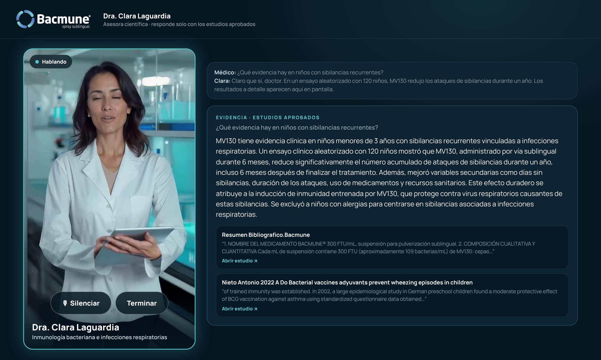

Asesora científica virtual
Asesora científica virtualDra. Clara Laguardia
Una asesora científica que conversa con el médico, de colega a colega, y responde únicamente con los estudios aprobados de Bacmune (MV130). Cada respuesta aparece en pantalla con su fuente.
El médico pregunta en el momento. La respuesta tiene que estar respaldada.
La evidencia de Bacmune es sólida, pero vive en 20 artículos científicos. En una visita o en un congreso, nadie tiene tiempo de abrirlos.
Preguntas puntuales
¿Cómo actúa? ¿Qué hay en pediatría? ¿Y en EPOC? ¿Es seguro en inmunodeprimidos? Cada médico llega con su propia duda.
Evidencia dispersa
Los datos están en estudios en inglés y en español, con diseños y poblaciones distintas. Encontrar el dato exacto toma tiempo.
Cero margen de error
En comunicación médica, una afirmación sin respaldo es un riesgo. Lo que se dice tiene que poder citarse.
Una colega que conoce cada estudio y nunca habla de más
Clara es un avatar de voz. El médico le habla con naturalidad y ella contesta con la evidencia de Bacmune, mientras la pantalla muestra de qué estudio sale cada dato.
Conversa por voz
Sin teclear y sin menús. Con tono profesional y cálido, en español de México.
Busca en los estudios
Antes de afirmar cualquier dato clínico, consulta los 20 estudios aprobados.
Muestra la fuente
La respuesta aparece en pantalla con el fragmento del estudio y el enlace para abrirlo.
Reconoce sus límites
Si un dato no está en los estudios, lo dice. No inventa ni completa.
De la pregunta a la evidencia en segundos
Hace su pregunta en voz alta
"¿Qué evidencia hay en niños con sibilancias?"
Entiende y decide
Si es una pregunta científica, no responde de memoria: va a los estudios.
Busca en los 20 estudios
Encuentra los pasajes relevantes. Si no hay respaldo, la respuesta es "sin evidencia".
Responde con su voz
En 2 a 5 frases, menciona el estudio de origen y remite a la pantalla.
Muestra la evidencia
Resumen, fragmentos textuales de los estudios y botón para abrir cada uno.
Clara funciona en el navegador, en una tablet, una laptop o una pantalla de stand. No requiere instalar nada; solo micrófono y conexión a internet.

20 estudios aprobados, y nada más
Clara solo conoce lo que Bacmune aprueba. Su conocimiento es este corpus.
Mecanismo e inmunidad entrenada 8
- Brandi 2022 · Cirauqui 2018
- Angulo Villavicencio 2020 · Guevara Hoyer 2020
- Bodas Pinedo 2023 · Jiménez 2024
- Lycke 2012 · París 2021
Infecciones respiratorias recurrentes 5
- Alecsandru 2011
- Sánchez Ramón 2020 · Sánchez Ramón 2021
- Montalbán Hernández 2024 (niños y adultos)
- García-González 2019 (amigdalitis recurrente)
Pediatría: sibilancias recurrentes 2
- Nieto 2021 (ensayo aleatorizado, doble ciego)
- Nieto 2022
EPOC 1
- Conejero 2021 (ensayo fase III)
Pacientes inmunodeprimidos 2
- Ochoa Grullón 2021 (deficiencia de células B)
- Pérez-Sancristóbal 2023 (autoinmunes)
SARS-CoV-2 y resumen 2
- del Fresno 2021
- Resumen bibliográfico de Bacmune
Diseñada para no salirse del guion científico
Un mismo agente, cuatro escenarios
Stand en congreso
Pantalla vertical con Clara en tamaño real. El médico se acerca, pregunta y se lleva la evidencia que le interesa.
Visita médica
El representante abre a Clara en su tablet cuando surge una pregunta que merece el dato exacto y su fuente.
Acceso directo para médicos
Un enlace exclusivo para que el médico consulte la evidencia de Bacmune cuando la necesite, desde cualquier dispositivo.
Capacitación de fuerza de ventas
Los representantes practican las preguntas difíciles y aprenden a ubicar cada dato en su estudio.
Lo que sigue para llevar a Clara a campo
Acceso exclusivo para médicos
Validación con cédula profesional ante el registro de la SEP, más un código de invitación personal entregado por el representante.
Voz y personalidad definitivas
Selección de voz con Bacmune y ajuste del estilo de conversación para cada escenario.
Tablero de preguntas
Registro de qué preguntan los médicos y qué estudios se consultan, para alimentar la estrategia médica y comercial.
Revisión regulatoria
Validación del flujo y del corpus con el área médica y regulatoria de Bacmune antes del lanzamiento.